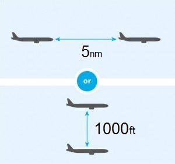
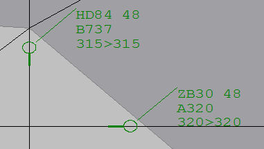
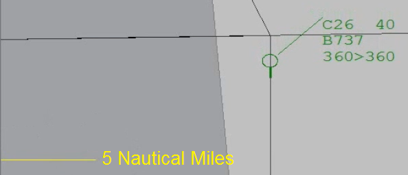
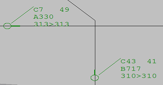
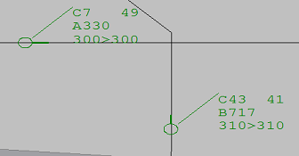
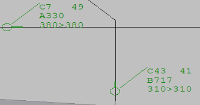
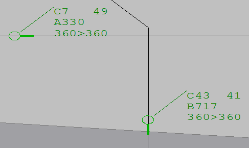
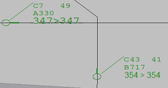
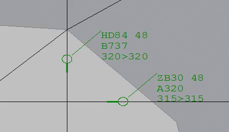
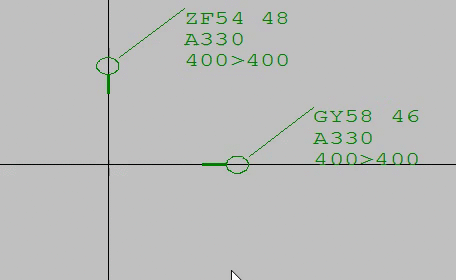

A conflict occurs if two aircraft are on course to violate both horizontal and vertical separation standards at some point in the future. Put simply, your job is to detect if two aircraft will come too close together in the future, and then to prevent them from potentially crashing.
For this experiment you will use the real Australian en route ATC standards: a conflict occurs when two aircraft will be separated by less than 1000 ft in altitude and by less than 5 nautical miles horizontally, at some point in the future.
The image below illustrates the minimal separation requirements you must maintain. If two aircraft are within 1000ft of each other vertically; then they must not come within 5 nautical miles of each other horizontally.

You will need to scan the screen for aircraft which you believe will come too close together in altitude and horizontal distance.
Altitude is how high an aircraft is flying,
typically represented in feet (ft). In this experiment, aircraft
altitudes will be rounded to the nearest 100 ft. interval. For
example, 31,500 ft is represented as 315.
This rounding makes your job easier as you only need to determine
whether the difference between two altitudes is less than
10. For instance, in the image below
the difference between the altitudes 315
and 320 is 5
and therefore this aircraft pair are in conflict.
Note that if two aircraft are separated by 1000 feet
exactly then they are not in conflict. For example,
if the altitude of HD84 (below) was
310 then it would not be in conflict
with ZB30 which is at
320.

If two aircraft are on the same altitude, you need to determine whether they will come within 5 nautical miles of each other horizontally as well (remember the definition of a conflict?). To help you judge horizontal distance, you will have a yellow marker on the left of your screen which shows you what 5 nautical miles looks.
Decide for each image if you think there is a conflict or not, then check your answer. If you are still unsure why you were incorrect, ask the experimenter.
|  | ||
|  | ||
|  | ||
|  | ||
|  |
If two aircraft in conflict violate minimum separation, they will turn yellow. If they have turned yellow, it is too late to resolve the conflict and you will lose more points if you try to. It is your job to prevent the aircraft from turning yellow.
In this example, the two aircraft are travelling only
500 ft apart. Notice that when they come within 5 nautical miles of each other they then
violate minimum separation and turn yellow.

If you believe two aircraft are in conflict, you need to resolve it by changing the altitude of one of the aircraft. To change the altitude:
